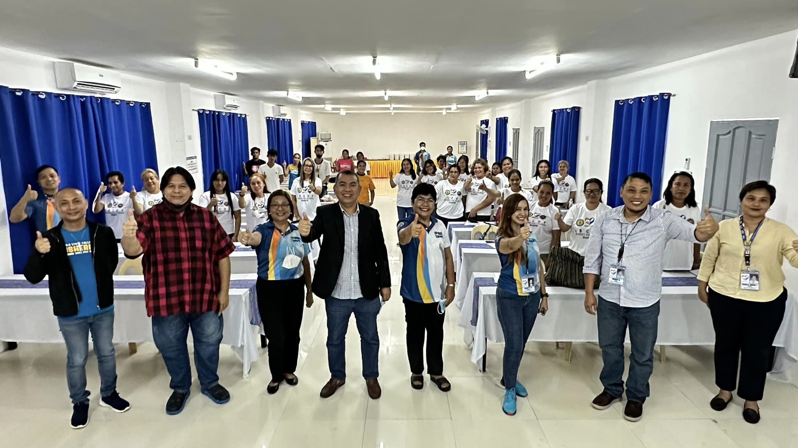

About Us
"ISUFST is utilizing its capabilities for research, training, knowledge creation, and innovation by thinking outside the box, and becoming a Regional fisheries edu-tourism hub. !"
The project will contribute to cross-border cooperation - to support the image- and destination building in Western Visayas as an attractive tourism destination, based on the potential of small coastal fishery and its heritage. Joint cross-border branding and marketing strategies will be developed and implemented. Diverse marketing tools will attract tourists and inhabitants to visit the fishponds and fish processing virtually and ISUFST will provide information. Online services promoting a sustainable tourism for the improvement of the fishermen’s quality of life through the development of an innovative concept of tourism; development of environmental and cultural education activities focused on consumption of local fish products to significantly impact the community.
About the StudyPh of CHED and ISUFST
The StudyPH Program is an education tourism initiative of the Commission on Higher Education, partnering with Philippine HEIs to establish the Philippines as a center of quality higher education in identified niches/programs of excellence is ASEAN.
The project is funded by the Commission on Higher Education, under the leadership of Chairman Prof. J. Prospero “Popoy” E. De Vera III, DPA, through the government`s contribution to the Higher Education Development Fund equivalent to forty percent (40%) from the total gross collections of the travel tax.
This is a living testament of the commitment of CHED and ISUFST to glocalize Philippine higher education towards internationalization, establishing the Philippines as a center of quality higher education, and promoting it as a study and tourism destination hub.